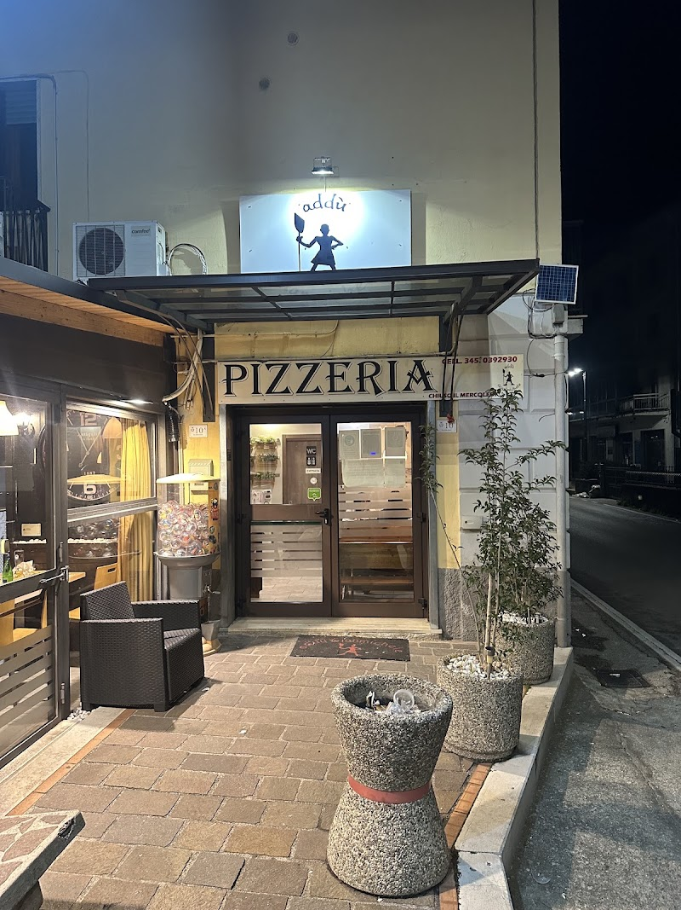
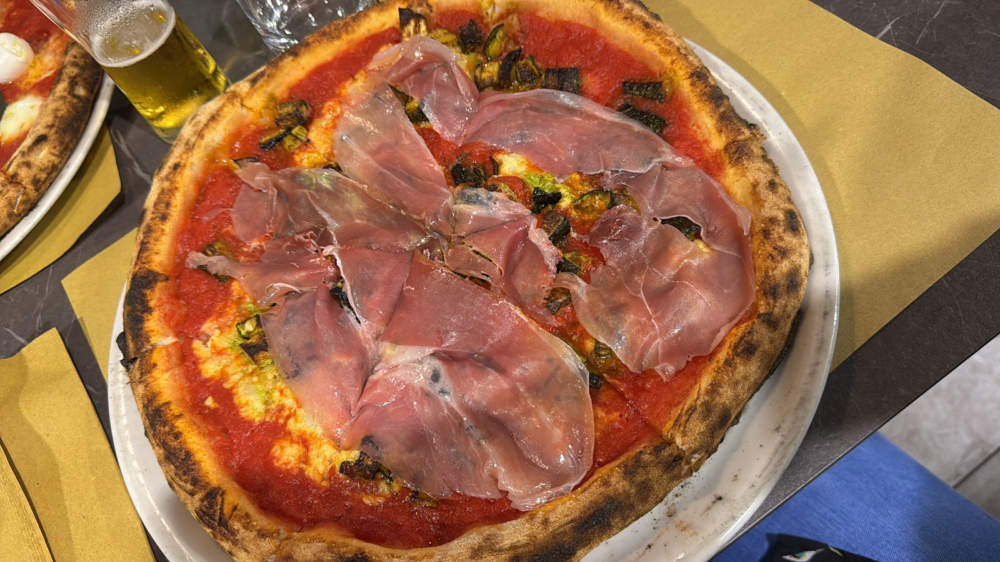
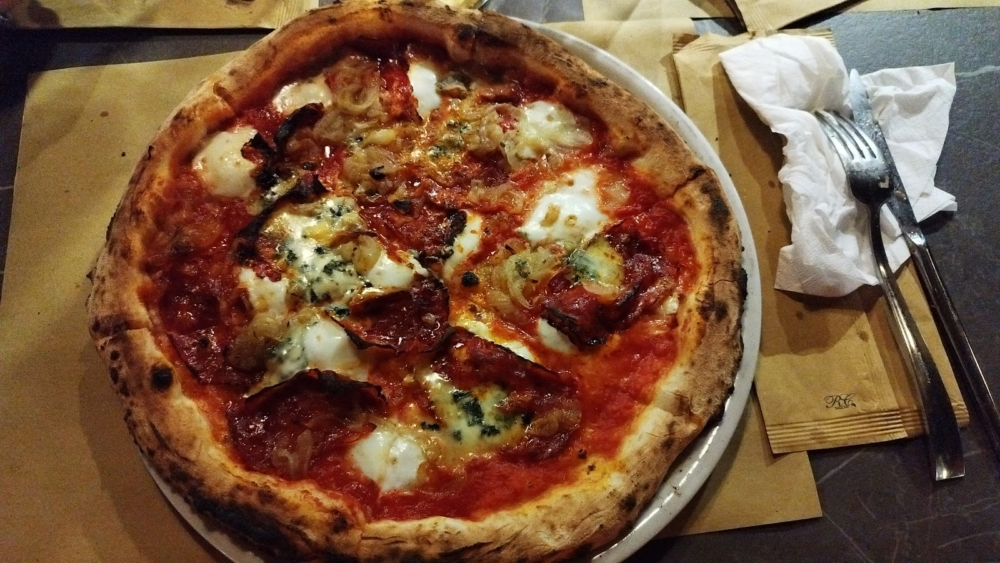
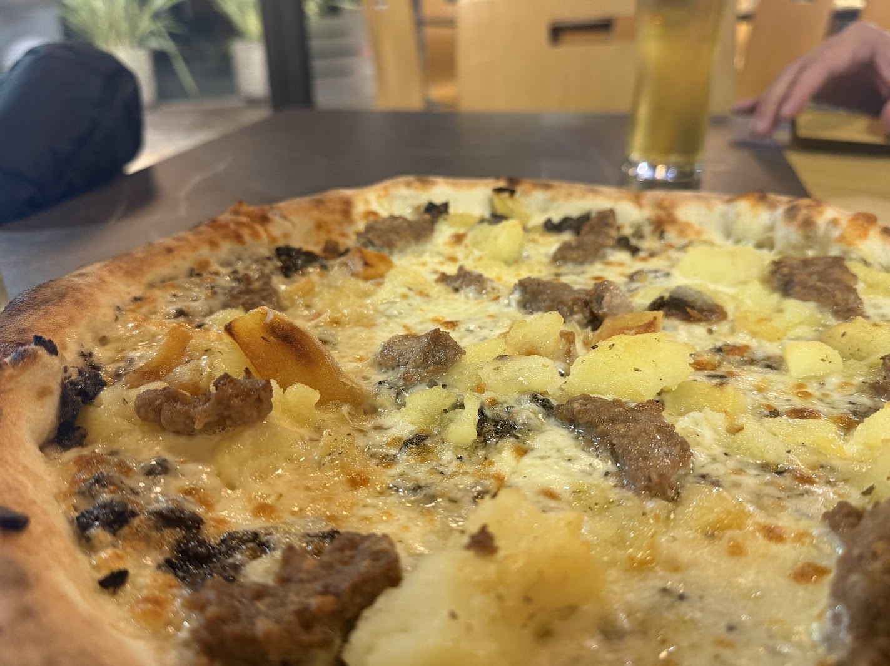
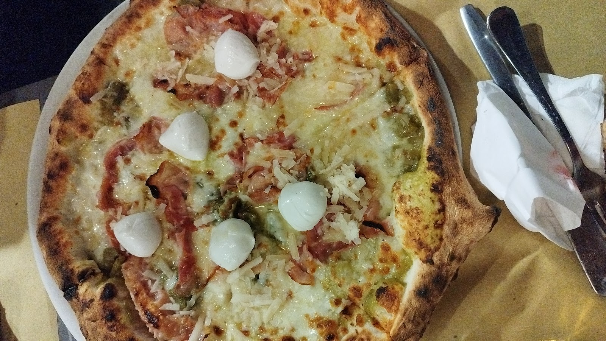
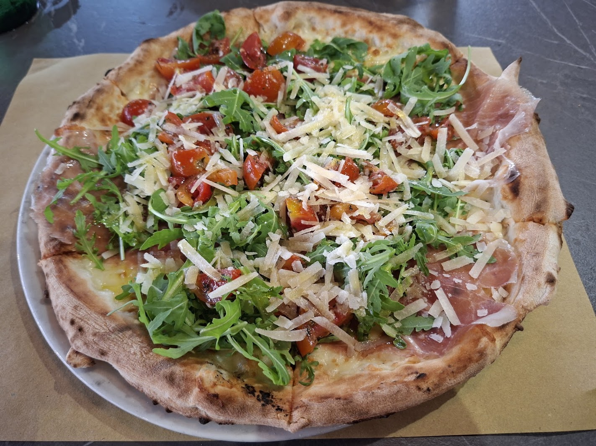
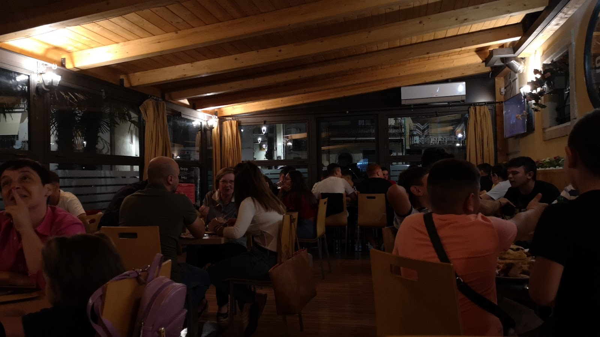
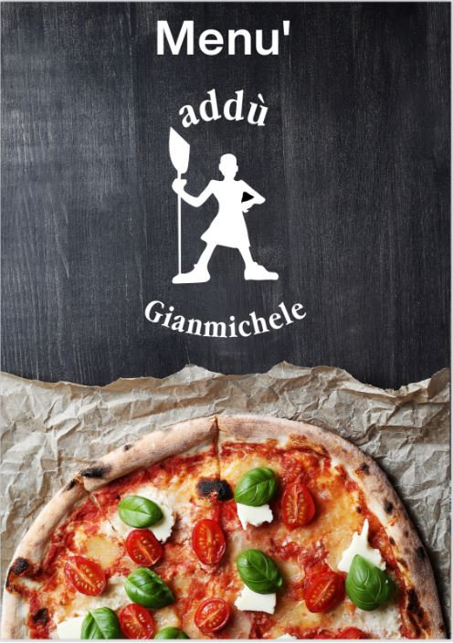

4 Formaggi
Mozzarella, formaggi vari
Polla · Vallo di Diano · Provincia di Salerno
Impasto leggero e digeribile, ingredienti genuini, porzioni generose. Nel cuore di Polla, aperti ogni sera fino a mezzanotte.
Chi siamo
Siamo nel pieno centro di Polla, affacciati su Piazza Villapiana. Un locale giovane e accogliente dove si viene per la pizza e si resta per l'atmosfera. Il forno non si ferma mai prima di mezzanotte, e la fila per l'asporto è la nostra pubblicità migliore.
Lavoriamo con materie prime genuine, un impasto leggero che resta digeribile anche a fine serata, e un menù tanto vasto da mettere d'accordo tutti. Consigliamo la prenotazione nei weekend: i posti intorno alla piazza sono comodi e gratuiti.


Galleria
Foto reali della pizzeria e delle nostre pizze, così come le vedono i clienti.






Dicono di noi
Recensioni reali lasciate dai clienti su Google Maps.
★★★★★"Pizza ottima, impasto super digeribile, ottima qualità delle materie prime."
Recensione Google
★★★★★"Ingredienti buoni, genuini, ricchi di sapore!"
Recensione Google
★★★★★"In pieno centro, affacciato in una piazza di Polla c'è questo locale dove si consiglia la prenotazione. Posto strategico perché circondato da tanti posti per parcheggiare liberamente."
Sydbar Roger · Local Guide
★★★★★"Location bella e molto giovanile. Servizio molto veloce e professionale. Menù molto vasto soprattutto per le pizze. Portate generose. Impasto leggero, ben farcite e grandi di dimensioni. Prezzi giusti."
Arianna Liuzzi · Local Guide
Vieni a trovarci
Piazza Villapiana
84035 Polla (SA)
Nel pieno centro del paese, con ampia possibilità di parcheggio gratuito nelle strade intorno.
🧭 Ottieni indicazioniChiama per ordini d'asporto e prenotazioni.
🍽️ Consumazione sul posto 🥡 Asporto
| Lunedì | 19:00 – 00:00 |
| Martedì | 19:00 – 00:00 |
| Mercoledì | 19:00 – 00:00 |
| Giovedì | 19:00 – 00:00 |
| Venerdì | 19:00 – 00:00 |
| Sabato | 19:00 – 00:00 |
| Domenica | 19:00 – 00:00 |
Apertura serale. Chiusura alla mezzanotte. Per aperture straordinarie o giorni di chiusura, chiamaci.
Chiama e passa a prenderla, oppure prenota il tuo tavolo in piazza.